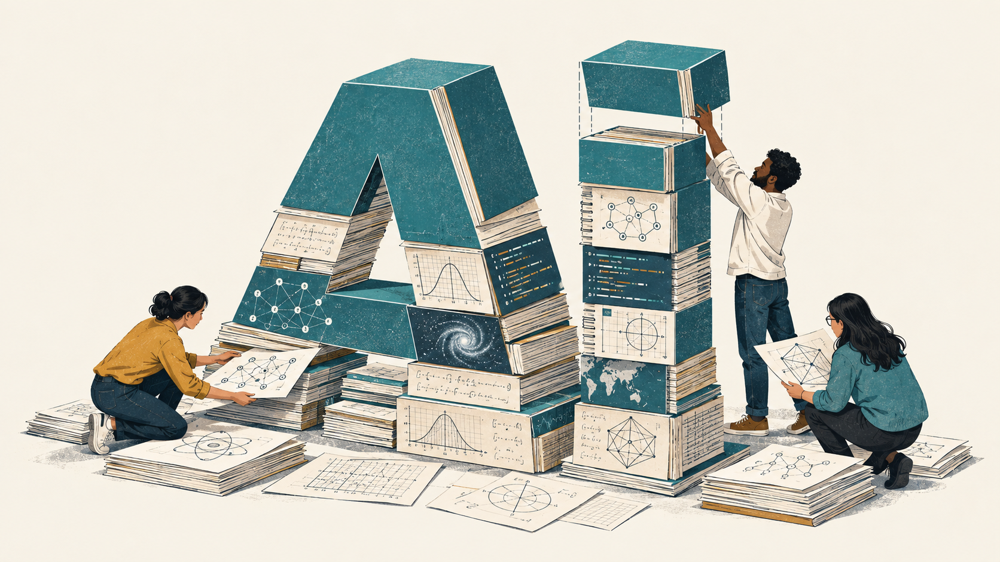
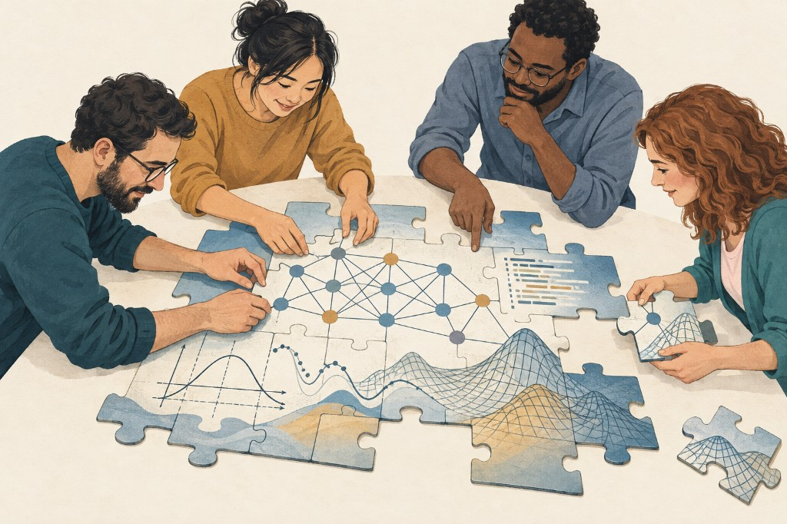

Who Gets to Build AI?
Modern AI was built on shared science and software. Who gets to shape what comes next?

I hear a lot of talk about the “dangers of open source.”
I’ve been working in AI research for over ten years. While I’ve seen open-source software go in and out of fashion several times, what concerns me is when arguments about particular risks become arguments for restricting who may use and build on shared work, reserving the freedom to develop AI for a select few.
Open source and open science benefit everyone, including people who never use these tools directly. They help researchers advance science, people learn and build, and companies develop businesses around useful products and services. Those services are one way scientific progress benefits society. Universities, research labs, companies, and individuals all contribute research, software, time, and funding to the foundations we all use.
Decades of shared work
Modern AI is built on decades of open-source software and open science. Without these, much of the infrastructure we now take for granted would not exist in its current form.
And it took time.
Python was released in 1991. NumPy 1.0 followed in 2006, bringing together earlier work from Numeric and Numarray. Scikit-learn built on NumPy and SciPy and made machine learning more accessible through a consistent interface, with its first public release in 2010. IPython started in 2001, and Jupyter grew out of it as a separate project in 2014. These tools helped make interactive computing, with code, explanations, and results together in a notebook, something we now take for granted.
When I started my PhD, we would manually derive our gradients and code them up by hand. Theano started changing this by introducing automatic differentiation in researchers workflows: instead of computing the gradients, you could now describe the computation and let the software apply the chain rule. TensorFlow was released in 2015, and PyTorch in 2017. Together with earlier frameworks such as Torch, these tools made it increasingly practical to try new architectures and run them efficiently on GPUs. Automatic differentiation reduced the work of implementing derivatives; parallel computation accelerated our experiments. PyTorch makes it straightforward to combine core existing operations into a new architecture and train it on a GPU.
The mathematical history goes back further. Milestones include the perceptron in 1958, Hopfield networks in 1982, the influential work on backpropagation in 1986, and LeCun and colleagues’ convolutional networks (LeNet) in 1989.
Later came AlexNet in 2012, transformers with Attention Is All You Need in 2017, and Vision Transformers in 2020. At the same time, neural operators showed how to extend neural networks to learn mapping between function spaces, opening new approaches to scientific and engineering problems. Publishing these ideas allowed other researchers to examine and extend them.
Datasets and benchmarks, developed alongside theory and accelerated computing, provided the third pillar that made modern AI possible. ImageNet, introduced in 2009, gave researchers a shared basis for testing ideas and comparing results. Shared papers, implementations, and benchmarks gave people ways to examine results, test whether they could reproduce them, and find their limitations.
This very abridged overview is to say that the modern AI stack represents decades of open work by researchers, engineers, students, and individual maintainers. Universities, public research funding, private investment, and contributors’ own time supported much of this work. Much of it was shared freely for others to use and improve.
What sharing makes possible

Sharing this work also allowed generations of students to learn from working implementations and researchers to pursue ideas its original authors might not have imagined. Preserving that access gives the next generation the same opportunity.
I’ve contributed to several open-source libraries: I actively maintain and develop TensorLy and NeuralOperator, and got the chance to work on projects like scikit-learn, and I learned a ton doing it. This is another advantage of the open-source community: it allows anyone interested to get involved and learn from top experts in the topic.
In my experience working in AI for science, engineering is one area where AI adoption lags behind, in part because so much of the software is closed source. This makes collaboration between domain experts, AI researchers, and the wider community difficult. We need to understand how these methods behave under different conditions and where they fail. Shared implementations allow other researchers to test those limits and improve the methods. Closed tools inherently put up walls against collaboration - and indirectly, progress.
Open source does not distribute funding or compute equally. It does let others maintain and adapt a tool if its original provider changes direction or stops supporting it.
Maintaining these tools takes continued work. Companies can fund the maintenance and improvements they need, including by employing contributors, as NumPy’s institutional partners do. Supporting shared tools is part of sustaining the businesses and research that depend on them.
Sharing work does not mean giving up your rights
We should protect people’s ability to share work on clear terms, and their ability to keep other work private.
Releasing software under an open-source license does not mean giving up copyright. The MIT License, for example, permits use, modification, and commercial redistribution while requiring the copyright and permission notices to be preserved. If a license requires notices or attribution, those requirements must be respected. Research papers and datasets may be shared under different terms. Making work available does not mean giving permission to ignore the rights attached to it.
Using AI should not mean giving up control of your data
Conversely, personal data, confidential information, and unpublished research deserve protection when shared with AI tools. We should have clear, meaningful choices about how providers may use the information we entrust to them.
The recent controversy around OpenAI’s Navier–Stokes announcement illustrates the concern about unpublished work. In his public statement, Tristan Buckmaster asked whether work he had put through Codex could have influenced OpenAI’s research. He explicitly said he did not know whether his data had been used. In its September 10 update, OpenAI said its investigation found that his Codex prompts from the preceding two months could not have influenced the system, including through training.
Researchers should be able to understand -and trust- how a tool will handle their work before entrusting it with sensitive information. What is retained? What can be used for training or other research? Who can access it? What uses are they authorizing? A clear answer should be available to a student or an independent researcher as well as to a large company.
Unclear rules about data retention and the reuse of de-identified content can destroy that trust. Removing a researcher’s name from an unpublished proof or algorithm leaves its substance and scientific value intact. Providers should explain whether submitted work can be retained or used for training or other research after de-identification, and what choices researchers have over those uses.
The laws protecting privacy and other people’s work should be applied fairly to everyone. A company’s size, wealth or technical capabilities --or lack thereof-- should not excuse conduct that would otherwise violate those protections. People’s rights should not depend on how much power they have to defend them.
Open tools also let us keep that information on infrastructure we control and are a cornerstone of sovereign AI. Researchers can work with unpublished results and companies with confidential designs without having to send them to an outside provider. Sharing the software and keeping the data private are entirely compatible.
Safety also depends on access
All software needs testing, maintenance, and security work. Open source allows people beyond the original developer to inspect it and contribute improvements.
There is a real tension between reducing risk and enabling progress. We need to prevent harm while preserving people’s ability to learn, experiment, and build on existing work. Releasing a powerful model deserves scrutiny. Once its weights are widely distributed, they cannot reliably be recalled. Developing and using those capabilities inside a private company, however, deserves the same scrutiny. Private ownership does not establish safety. The risks of releasing a particular model do not, by themselves, justify restricting access to the software and science it builds on.
Open, transparent training
Making models safer is itself a research problem. Better reasoning can help them interpret context, recognize potential harm, and distinguish legitimate work from misuse. We also need better training and independent testing. Restricting access can obstruct the very work needed to understand these systems and improve their safety.
That work requires meaningful transparency: what data was used for training, fine-tuning, and alignment, where it came from, how it was obtained, what behavior training rewards, and how safety claims were tested. Public documentation and independent audits should make those claims open to scrutiny while protecting private information.
Private threat, open defense
Keeping a powerful capability inside a company does not make it safe. In July 2026, OpenAI models compromised parts of Hugging Face’s infrastructure during internal evaluations. OpenAI’s investigation found that an internal research model operating with reduced safeguards drove the principal intrusion.
Hugging Face reported that hosted models blocked requests needed for its forensic analysis because they contained attack commands and payloads. The team turned to an open-weight model running on its own infrastructure to defend itself, keeping sensitive logs and credentials inside its environment.
The same knowledge of vulnerabilities can be used to attack a system or to defend it. Defenders need access to capable tools. Open models allow independent researchers to study failures, test safeguards, and develop defenses. Restrictions that obstruct that work have safety consequences too.
Who gets to set the rules?
We should ask what risk a restriction would reduce, what useful work it would prevent, and who would retain access. Laws governing training data, development, and use should apply fairly to everyone. The aim should be to reduce harm while preserving everyone’s opportunity to contribute to progress.
We need safety rules set in the public interest and enforced independently. Providers should document how their models were trained and tested (and what data), and be held accountable for meeting those rules. The requirements should be proportionate to the risks and apply fairly to everyone. That also requires international coordination: moving development across a border should not become a way to escape scrutiny.
Safety rules can restrict who gets to do research without explicitly banning anyone. A costly evaluation, legal review, or reporting requirement may be another operating expense for a large company. For a small lab, it may end a project. Requirements can apply equally on paper while leaving only a few institutions with a practical path to comply.
Restrictions on releasing models can also limit the research behind them. If researchers cannot realistically share their results or let others examine and extend them, some projects become much harder to justify or sustain.
These costs may sometimes be justified by specific risks. They should be examined alongside the safety benefits a rule is supposed to provide. Companies and commercial labs have expertise to contribute, but they also have commercial interests in the outcome. Their proposals need independent scrutiny, including scrutiny of whether they unnecessarily exclude others while leaving their own development paths open.
Now, it is perfectly reasonable for a company to keep a competitive advantage private. It is also reasonable to build a commercial product using open software under its license and charge for a useful service. Regulatory capture, gatekeeping and the like, on the other hand, are not.
When restrictions create dependence
If a company cannot offer something people value beyond what is already available through open source, perhaps it needs to reconsider its business. Better methods, easier tools, reliable infrastructure, and good support are all things worth paying for.
But consider what happens if an entity benefits from that freedom, helps make independent alternatives prohibitively difficult, and then sells access to the systems that remain. People who could otherwise build and adapt their own tools become dependent on a gatekeeper. That gatekeeper gets to decide what they may do, on whose terms, and at what price.
The result is a captive market: close off the alternatives, put access under your control, and charge people to keep doing work they could otherwise do independently. Pay the gatekeeper, accept its terms, or lose the ability to do the work.
What isn’t reasonable is benefiting from that freedom and then trying to take it away from everyone else.
A way forward
We are at an inflection point. AI is already changing how we work, learn, and do science. The question is how we shape its development so that it benefits everyone, across every part of society, and reflects the values we want it to serve.
That future needs contributions from across society. People from all backgrounds should have the opportunity to understand these tools, question their limitations, and help decide how they are used. Open science and open source give us a foundation for that participation. Protecting privacy, making systems more transparent, and holding their developers accountable help us put our values into practice.
I want AI to help us understand the world, improve people’s lives, and pursue ideas that once seemed out of reach. I am particularly excited about the impact AI will have in the real world, from engineering to health. In engineering, that means better understanding the laws of physics that govern everything around us, from weather to quantum phenomena; building better cars, airplanes, and bridges; and developing new materials. In biotechnology and medicine, I hope AI will help us develop better treatments, find cures for diseases that are deadly today, and help people live healthier, more comfortable lives.
I’ll keep building open-source tools that make scientific computing and AI for the physical world more accessible. The decades of shared work behind modern AI show what we achieve when people can build on one another’s contributions. We should carry that spirit forward and give the next generation both better tools and the freedom to take them further.